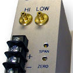

Product List
Please feel free to Contact Us if you have any problems finding a particular product you're looking for.
You can also look for products by the types of problem they solve or take a look at an affordable custom solution.
Major Product Types Include:
- Controllers - Used in conjuction with transmitters for controlling flow, level, position, pressure, PH, and temperature. Enclosure options include PC cards, Din, NEMA, and panel mounted.
- Permeability Testers - Measures the ability of air or fluids to pass through paper, fabric, plastic meshes, etc.
- Transmitters - Accurately measure pressure, ultra-low pressure, flow rate, ultra-low flow rate ( i.e. draft range) and position. We also provide optional NEMA rated enclosures.
Indicators
Flow & Volume Indicator (CES 209) - The CES 209 Flow Controller and Back Pressure Indicator simultaneously displays the flow rate and volume of an input flow all without requiring a bubble meter or spirometer.
Portable Flow & Volume Indicator (CES 237) - The CES 237 Portable Flow & Volume Indicator will allow you to conveniently measure flow rate and the volume of an input flow all without requiring a bubble meter or spirometer.
Controllers
Our full line of controllers are used for controlling flow, level, position, pressure, PH, and temperature.
Flow Controller and Back Pressure Indicator (CES 280) - Our controllers respond to information from transmitters more rapidly than PLCs. They also control your processes more precisely than PLCs currently on the market.
Permeability / Porosity Testers
High Flow Permeability Testers (CES 454) - Provides fast and accurate readings of the air flow through various types of paper and fabrics. Range: 5 - 40,000 Corestas or 5 - 40,000 cc / min.*
Low Flow Permeability Testers (CES 488) - Provides fast and accurate readings of the air flow through various types of paper and fabrics. Range: 0.2 - 60 Corestas or 0.2 - 60 cc / min.*
*= (assuming ΔP 1 centibar over a 1 cm2 area).
Transmitters
Transmitters are able to accurately measure pressure, flow rate, and position. They are also responsible for sending a signal back to a controller, PLC, or similar device.
Draft Range Transmitter (CES 447) - A cost effective Two wire, Draft range Transmitter measures the pressure differences between two air/ gas or fluid sources. Outputs a 4-20mA signal.
Draft Range Transmitter (CES 450) - A cost effective Three wire, Draft range transmitter measures the pressure differences between two air/gas or fluid sources. Outputs either a 0-5v or 5-10v signal.
Auto-Zero Draft Range Transmitter (CES 467) - Auto-Zero transmitter, ideal for applications where accuracy and repeatability are critical (0.5-0.25% accuracy guaranteed). Perfect for remote or unattended applications.
Auto-Zero Ultra-Low Draft Range Transmitter (476) - Our top of the line transmitter is the ultimate when accuracy and repeatability are paramount. Ideal for applications where accuracy and repeatability are critical (±0.05 or 0.25% accuracy guaranteed). Measures inputs of 0.005 - 0.5" of H2O at full scale.
Pressure Drop & Ventilation Tester (508) - Accurately and repeatably measure total flow and ventilation flow through a test sample in a temperature controlled environment.